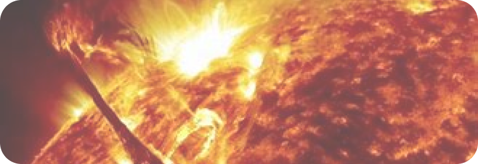

SOL
O Sol é a estrela central do nosso sistema solar, responsável por fornecer luz e calor,
essenciais para a vida na Terra. Além de ser uma fonte inesgotável de energia, o Sol
influencia diretamente as condições climáticas e o ciclo de vida no nosso planeta.
CURIOSIDADES
O Sol contém quase que a totalidade da massa do sistema solar, cerca de 99,8%. É em
virtude de sua massa que os planetas orbitam à sua volta.
O Sol também é o responsável direto pela manutenção da vida em nosso planeta, devido
sua luz, utilizada pelas plantas na fotossíntese.
Sua energia também fornece calor para Terra, que mantém a temperatura adequada para a
vida. Sua gravidade também influencia as marés nos oceanos.
O Sol é uma estrela com diâmetro de 1 392 700 km, ou seja, 109 vezes maior que o da
Terra, com 12 742 km. Isso quer dizer que poderíamos enfileirar 109 planetas Terras ao
seu lado.
Sua composição é basicamente hidrogênio e hélio. É justamente a fusão nuclear do
hidrogênio a fonte de sua energia, liberada na forma de luz e calor. Ao fundirem seus
núcleos, átomos de hidrogênio formam o hélio.
CARACTERÍSTICAS
Massa: 1,989 × 10³⁰ kg (330.000 vezes a massa da Terra).
Diâmetro: Cerca de 1,392 milhão de km (109 vezes o da Terra).
Temperatura na Superfície: Aproximadamente 5.500 °C.
Temperatura no Núcleo: Pode atingir até 15 milhões de °C.
Composição: Hidrogênio e Hélio.
Distância da Terra: Cerca de 149,6 milhões de km.
Rotação: Cerca de 25 dias no equador e 35 dias nos polos.
Idade: Aproximadamente 4,6 bilhões de anos.
O Sol fica a cerca de 150 milhões de km da Terra, o equivalente a 8 minutos-luz de distância (1 minuto-luz corresponde a 17 987 547 quilômetros).
Essa distância é surpreendente, ainda mais se pensarmos que mesmo assim o Sol é a estrela que fica mais próxima do nosso planeta.
Por conta da distância, a luz do Sol não chega a nós imediatamente; ela demora 8 minutos e 18 segundos para chegar à Terra.
AS 6 CAMADAS DO SOL
1. Coroa.
2. Cromosfera.
3. Fotosfera.
4. Camada convectiva.
5. Camada radiativa.
7. Núcleo.
O SOL PODE MORRER?
Quando as suas fontes de energia se esgotarem, o Sol morrerá.
Quando o Sol tiver consumido todo o seu hidrogênio, o hélio se tornará o seu
principal combustível.
Em 4,5 bilhões de anos de vida, o Sol consumiu cerca de metade do seu hidrogênio.
Isso quer dizer que ele está na metade da sua vida.
Acabando o seu consumo, a morte do Sol estará em curso, pois nesse momento, o astro
começará a aumentar de tamanho e engolirá planetas (é o que acontecerá com a Terra).
Ele ficará 100 vezes maior, até que colapsará.